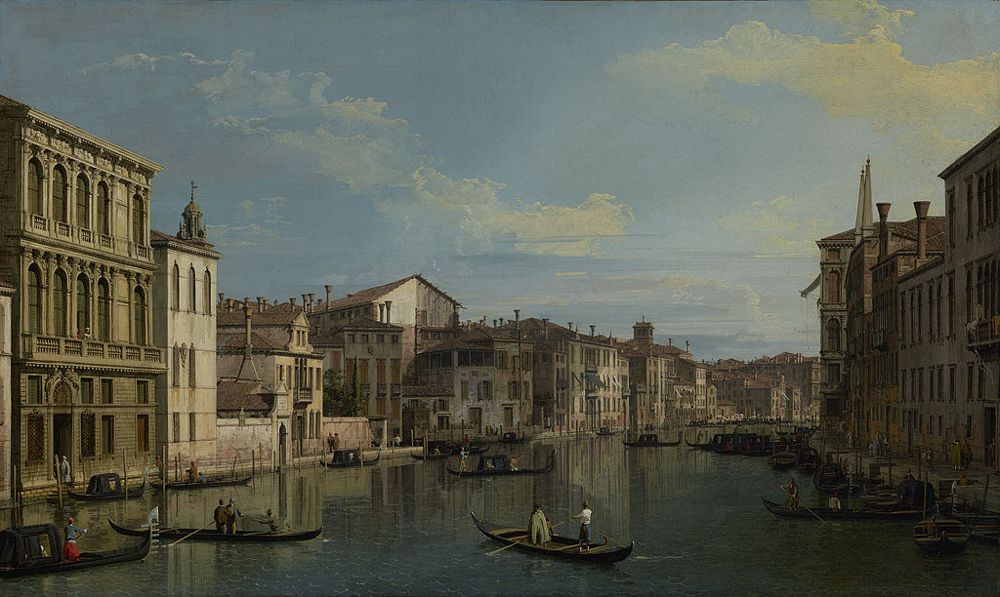

<head>
<meta charset="UTF-8" />
<meta name="keywords" content="drawing, painting" />
<meta name="description" content="drawings by Sunjy" />
<title>Sunjy</title>
<link rel="shortcut icon" type="image/x-icon" href="../../mImages/mCommon/favicon.ico" media="screen" />
<link rel="stylesheet" type="text/css" href="../../mCsses/mCommon/mCssA.css" />
<link rel="stylesheet" type="text/css" href="../../mCsses/mCommon/mCssB.css" />
<link rel="stylesheet" type="text/css" href="../../mCsses/mCommon/mCssC.css" />
<link rel="stylesheet" type="text/css" href="../../mCsses/mCommon/mCssD.css" />
<link rel="stylesheet" type="text/css" href="../../mCsses/mContent/mCssA.css" />
<link rel="stylesheet" type="text/css" href="../../mCsses/mContent/mCssB.css" />
<link rel="stylesheet" type="text/css" href="../../mCsses/mContent/mCssC.css" />
<link rel="stylesheet" type="text/css" href="../../mCsses/mContent/mCssD.css" />
</head>
<script type="text/javascript" src="../../mScripts/mContent/mContentAA.js" /></script>
<script type="text/javascript" src="../../mScripts/mContent/mContentAB.js" /></script>
<script type="text/javascript" src="../../mScripts/mContent/mContentAC.js" /></script>
<script type="text/javascript" src="../../mScripts/mContent/mContentAD.js" /></script>
<script type="text/javascript"></script> 
<script type="text/javascript">
document.write('<div class="mImgAbsolute"></div>');
/*
document.write('<p class="mFontSizeBColor" />From a white paper...</p>');
document.write('<table class="center"><tr><td>');
document.write('');
document.write('</td></tr></table>');
*/
</script>


<script type="text/javascript">
document.write('<p class="mFontSizeBColor" />The Grand Canal in Venice</p>');
document.write('<p class="mFontSizeSColor" />“The Grand Canal in Venice from Palazzo Flangini to Campo San Marcuola” by Canaletto was painted in 1738. This composition is called a veduta (Italian for “view”), meaning a highly detailed, usually large-scale painting of a cityscape or some other vista. This vendute painting depicts the upper reaches of the Grand Canal in Venice, Italy, near the entrance to the Cannaregio Canal. Venduta paintings were popular with the wealthy tourists to Venice in the mid-1700s.<br><br>The vantage point of this painting is in the middle of the canal, surrounded by gondolas, barges, and the buildings lining the banks of the Grand Canal. Many of the structures depicted in this 1738 painting still stand today. The painting pictures the traghetto, a ferry service using rowboats that were the primary means of crossing the Grand Canal before the construction of the many bridges that we can see today.<br><br>This famous Canaletto is a typical example of the vedute paintings popular with Grand Tour travelers of the 1700s as a visual record of their travels. Canaletto was one of the more famous painters of city views or vedute, especially of Venice. From 1746 to 1756, he worked in England, where he created many paintings of the sights of London. He was highly successful in England and became famous thanks to the British merchant and connoisseur Joseph Smith, who sold his extensive collection of Canaletto’s paintings to King George III in 1762. Canaletto’s paintings became highly prized as, during the 18th century, European monarchs vied for his grandest paintings.<br></p>');
document.write('<table class="center" /><tr><td>');
document.write('<br>The vantage point of this painting is in the middle of the canal, surrounded by gondolas, barges, and the buildings lining the banks of the Grand Canal. Many of the structures depicted in this 1738 painting still stand today. The painting pictures the traghetto, a ferry service using rowboats that were the primary means of crossing the Grand Canal before the construction of the many bridges that we can see today.<br><br>This famous Canaletto is a typical example of the vedute paintings popular with Grand Tour travelers of the 1700s as a visual record of their travels. Canaletto was one of the more famous painters of city views or vedute, especially of Venice. From 1746 to 1756, he worked in England, where he created many paintings of the sights of London. He was highly successful in England and became famous thanks to the British merchant and connoisseur Joseph Smith, who sold his extensive collection of Canaletto’s paintings to King George III in 1762. Canaletto’s paintings became highly prized as, during the 18th century, European monarchs vied for his grandest paintings.<br>" />');
document.write('</td></tr></table>');
</script>


